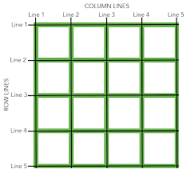

CSS-Grid
Самый современный, мощный, но в то же время сложный инструмент для вёрстки в текущее время. Grid - сетка. Это как бы новый взгяд и прокачка устаревшей "табличной вёрстки".
- Flexbox - одномерные макеты
- Grid - двумерные макеты (можно управлять и колонками и строками одновременно)

Grid-контейнер
<div class="grid-container">
<div class="child child-1">1</div>
...
<div class="child child-8">8</div>
</div>
.grid-container {
display: grid | inline-grid;
}
По умолчанию только при display: grid у родителя все дочерние элементы будут располагаться друг по другом и равномерно занимать всю высоту контейнера.
grid-auto-flow
Управление грид-потоком. Как будут отображаться грид-потомки изначально? Как строки* или как колонки. Аналог flex-direction, только смысл здесь обратный, у flex - это направлление оси как row, а у grid - это распределение потомков в качестве колонок.
Визаульно это выглядит так (вообще запутать хотят):
flex-direction: column === grid-auto-flow: row
flex-direction: row === grid-auto-flow: column
flex-row === grid-column
flex-column === grid-row
.grid-container {
display: grid;
grid-auto-flow: column;
// grid-auto-flow: row* | column | dense;
// 1 м 2 колонка будут шириной 50px и 100px,
// остальные - равномерно распределяться по ширине контейнера
grid-template-columns: 50px 100px;
}
Колонки
grid-template-columns
Свойства, задающие размеры и количество колонок. Дочерние элементы автоматически группируются в эти колонки (переносятся в строки - autobreak), если их много.
.grid-container {
display: grid;
grid-template-columns: 50% 50%;
}
Можно использовать новую относительную grid-единицу - фракцию (fr). Аналог коэф. flex-grow. Её ввели, чтобы не записывать проценты с дробями.
.grid-container {
display: grid;
grid-template-columns: 1fr 1fr;
}
.grid-container {
display: grid;
grid-template-columns: 2fr 100px 1fr;
}
Если нужны одинаковые колонки или ряды, то можно воспользоваться функцией repeat(). Будет создано 3 колонки по 250 пикселей. Фиксированные размеры колонок неадаптивны (Можно проверить ресайзом).
.grid-container {
display: grid;
// 3 колонки по 250px: 250px 250px 250px === repeat(3, 250px)
grid-template-columns: repeat(3, 250px);
// 4 колонки (нечетные 2fr, четные 1fr)
// grid-template-columns: 2fr 1fr 2fr 1fr === repeat(2, 2fr 1fr);
}
Лучше использовать адаптивные значения в фракциях.
.grid-container {
display: grid;
grid-template-columns: repeat(3, 1fr);
}
grid-auto-columns
При grid-auto-flow: column; можно упоавлять поведением ширины колонок, которым явно не задана ширина через grid-template-columns.
Если колонки будут занимать не всё пространство внутри грид-контейнера, то будет свободное место, и напротив если будут занимать большее место, то буду выпадать из родителя.
.grid-container {
display: grid;
grid-auto-flow: column;
grid-template-columns: 50px 100px;
grid-auto-columns: 20px;
}
Строки
grid-template-rows
Свойства, задающие размеры и количество рядов. По ум* строки равномерно распределяются по высоте контейнера.
.grid-container {
display: grid;
grid-template-columns: repeat(2, 1fr);
// 1-ая строка будет высотой 50px, 2-ая - 100px,
// остальные - равномерно распределяться по ширине контейнера
grid-template-rows: 50px 100px;
}
.grid-container {
display: grid;
grid-template-columns: repeat(2, 1fr);
// 1-3 строки будут высотой 20px,
// остальные - равномерно распределяться по ширине контейнера
grid-template-rows: repeat(3, 20px);
}
grid-auto-rows
Строкам, которым явно не задана высота через grid-template-rows, можно задавать явную высоту через свойство grid-auto-rows.
.grid-container {
display: grid;
grid-template-columns: repeat(2, 1fr);
grid-template-rows: repeat(2, 20px);
// у незаданных строк будет фикс. высота 40px (даже контент не будет менять высоту)
// чтобы задать мин. высоту можно использовать функцию minmax()
grid-auto-rows: 40px | minmax(40px, auto);
// auto-fill и auto-fit - автоматическое распределение
}
Отступы
grid-gap, column-gap, row-gap
.grid-container {
display: grid;
grid-template-columns: repeat(3, 1fr);
// Расстояние между колонками 30px
column-gap: 30px;
// Расстояние между строками 30px
row-gap: 30px;
// Шорткат - Расстояние между строками и колонками 30px
grid-gap: 30px;
}
Выравнивание грид-потомков
align-content
Выравнивание контента по оси Y относительно род. контейнера (актуально при наличие свободного места в контейнере)
.grid-container {
display: grid;
grid-template-columns: 150px, 200px;
align-content: center;
// align-content: stretch* | start | end | center | space-around | space-between | space-evenly;
}
justify-content
Выравнивание контента по оси X относительно род. контейнера (актуально при наличие свободного места в контейнере)
.grid-container {
display: grid;
grid-template-columns: 150px, 200px;
justify-content: space-around;
// justify-content: start* | end | center | space-around | space-between | space-evenly;
}
place-content
Шорткат (align-content justify-content).
.grid-container {
display: grid;
grid-template-columns: 150px, 200px;
place-content: end center;
// place-content: center center --> place-content: center;
}
align-items
Выравнивание контента внутри grid-ячеек по оси Y. Будет ужиматься по контенту, если явно не задана высота, при этом незримая разлиновка grid-ячеек будет оставаться неизменной, а позиционироваться будет только внутренний контент этих ячеек.
.grid-container {
display: grid;
grid-template-columns: repeat(3, 1fr);
align-items: start;
// align-items: stretch* | start | center | end;
}
justify-items
Выравнивание grid-элемента по горизонтали. Будет ужиматься по контенту, если явно не задана ширина.
.grid-container {
display: grid;
grid-template-columns: repeat(3, 1fr);
justify-items: start;
// justify-items: stretch* | start | center | end;
}
place-items
.grid-container {
display: grid;
grid-template-columns: repeat(3, 1fr);
place-items: start start;
}
Выравнивание отдельного грид-потомка
align-self
Выравнивание grid-элемента по вертикали. Будет ужиматься по контенту, если явно не задана высота.
.grid-container {
display: grid;
grid-template-columns: repeat(3, 1fr);
}
.grid-child {
align-self: center;
// align-self: stretch* | start | center | end;
}
justify-self
Выравнивание grid-элемента по горизлнтали. Будет ужиматься по контенту, если явно не задана ширина.
.grid-container {
display: grid;
grid-template-columns: repeat(3, 1fr);
}
.grid-child {
justify-self: right;
// justify-self: stretch* | start | center | end;
}
place-self
Шорткат для одновременного указания значений свойствам justify-self и align-self.
.grid-container {
display: grid;
grid-template-columns: repeat(3, 1fr);
}
.grid-child {
place-self: end end;
}
Позиционирование grid-потомков
Можно позиционировать grid-потомки по так называемым grid-линиям (column lines и row lines), то есть расстягивать отдельные grid-потомки по колонкам или строкам. С этой технологией можно строить достаточно сложные и нестандартные сетки. Можно очень гибко менять поток, порядок и размеры отдельных grid-элементов (будет меняться стандартное поведение распределения grid-потока, и элементы будут перегруппировываться).
grid-column
.grid-container {
display: grid;
grid-template-columns: repeat(3, 1fr);
}
.grid-child {
// grid-column-start: 1; // колонка стартует на 1-ой линии
// grid-column-end: 4; // а заканчивается на 4-ой
grid-column: 1 / 4; // shortcut
}
grid-row
.grid-container {
display: grid;
grid-template-columns: repeat(3, 1fr);
}
.grid-child {
// grid-row-start: 1; // строка стартует на 1-ой линии
// grid-row-end: 4; // а заканчивается на 4-ой
grid-row: 1 / 4; // shortcut
}
grid-area
Шорткат для [grid-row-start / grid-column-start / grid-row-end / grid-column-end].
.grid-container {
display: grid;
grid-template-columns: repeat(3, 1fr);
}
.grid-child {
// grid-row-start: 2
// grid-column-start: 1;
// grid-row-end: 3;
// grid-column-end: 4;
grid-area: 2 / 1 / 3 / 4;
}
grid-template-areas
Можно каждому грид-потомку указывать в grid-area не значения start и end, а указывать шаблон. На этих шаблонах можно строить сетки.
'.' - в шаблоне пустое место.
.grid-container {
display: grid;
grid-template-columns: 200px 1fr;
grid-template-rows: 50px 1fr 50px;
grid-template-areas:
grid-gap: 1px;
"header header"
"aside content"
"footer footer";
}
// Для данного шаблона нужно 4-е грид-потомка
.grid-child:nth-child(1) { grid-area: header; }
.grid-child:nth-child(2) { grid-area: aside; }
.grid-child:nth-child(3) { grid-area: content; }
.grid-child:nth-child(4) { grid-area: footer; }